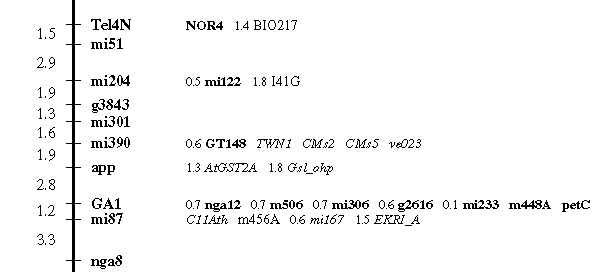

Figure 1 : Marker representation in new RI maps
 Example of Marker representation:
An example of the new representation for markers placed on the RI maps.
The markers in bold, Tel4N, NOR4, mi51, mi204, mi122, g3843, mi301, mi390, GT148, app, GA1, nga12, m506, mi306, g2616, mi233, m448A, petC, mi87 and nga8 are the framework markers.
The markers in plain text,
BIO217, I41G and m456Aare markers which have been placed in a UNIQUE position by the MAPMAKER software.Markers in italics, TWN1, CMs2, CMs5, ve023, AtGST2A, Gsl_ohp, C11Ath, m456A, mi167 and EKRI_A are markers which have been assigned to more than one position by the MAPMAKER software, the position shown is the "MOST PROBABLE" statistical position for the marker based on the data we have available.